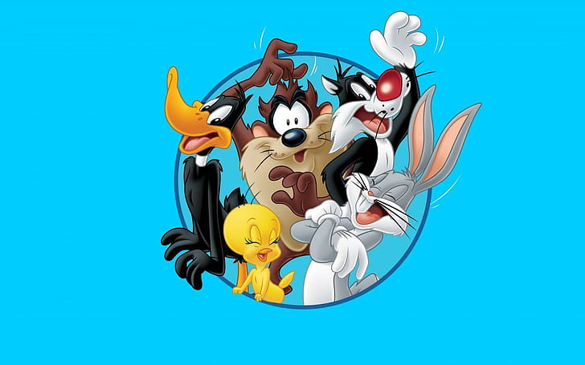

This is the about page
The Looney Tunes Show is an American animated sitcom produced by Warner Bros. Animation that ran from May 3, 2011, through August 31, 2014, on Cartoon Network. The series consists of two seasons, each containing 26 episodes, and features characters from the Looney Tunes and Merrie Melodies theatrical cartoon shorts updated for the 21st century. Initially, the series received mixed reviews from critics, who praised the visual style, humor, portrayal of the characters, and voice acting, but criticized its direction, its divergences from its source material, its lack of slapstick, and its changes to the characters' designs and personalities.
